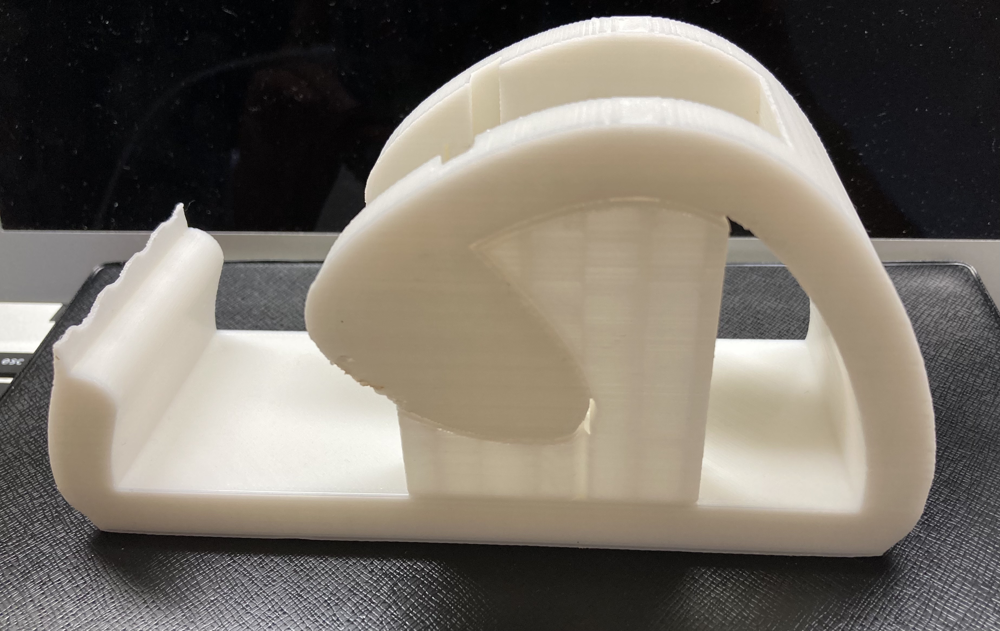

８月
写真と共に簡単に解説する＜1＞テープ台
最初に作ったものがこちら

部品を積み合わせる形式。サポートが全然取れなかった。
2回目の挑戦

一発で回転する部分も含めて印刷できるように設計した。
少し力は必要だが、回る部分を外すことができた。
＜２＞タマゴ型スタンド
作るものなくて適当に作ったやつ
タマゴを切ったような形でモデリングしたが切れ目のジグザグが細かすぎて糸を引いてしまい汚くなってしまった。
意外に反応がよかったので改良↓
切れ目のジグザグを少し大きめにしてポップな形に仕上げた。
せっかくなら割れた卵の片割れも欲しいなぁ と思い、ジグザグを綺麗に調整した。